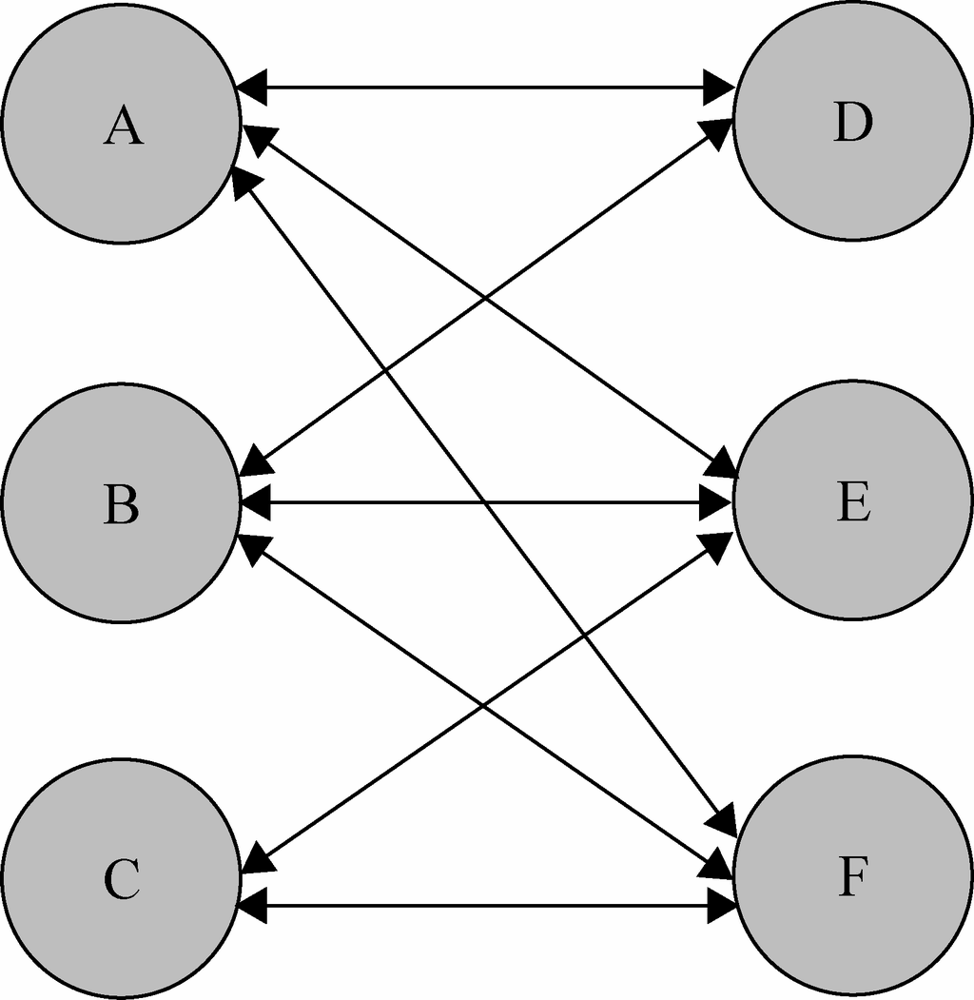
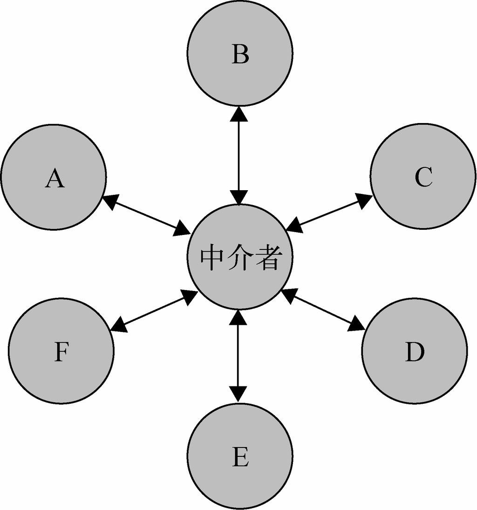

在我们生活的世界中，每个人每个物体之间都会产生一些错综复杂的联系。在应用程序里也是一样，程序由大大小小的单一对象组成，所有这些对象都按照某种关系和规则来通信。
平时我们大概能记住10个朋友的电话、30家餐馆的位置。在程序里，也许一个对象会和其他10个对象打交道，所以它会保持10个对象的引用。当程序的规模增大，对象会越来越多，它们之间的关系也越来越复杂，难免会形成网状的交叉引用。当我们改变或删除其中一个对象的时候，很可能需要通知所有引用到它的对象。这样一来，就像在心脏旁边拆掉一根毛细血管一般，即使一点很小的修改也必须小心翼翼，如图14-1所示。

图 14-1
面向对象设计鼓励将行为分布到各个对象中，把对象划分成更小的粒度，有助于增强对象的可复用性，但由于这些细粒度对象之间的联系激增，又有可能会反过来降低它们的可复用性。
中介者模式的作用就是解除对象与对象之间的紧耦合关系。增加一个中介者对象后，所有的相关对象都通过中介者对象来通信，而不是互相引用，所以当一个对象发生改变时，只需要通知中介者对象即可。中介者使各对象之间耦合松散，而且可以独立地改变它们之间的交互。中介者模式使网状的多对多关系变成了相对简单的一对多关系，如图14-2所示。

图 14-2
在图14-1中，如果对象A发生了改变，则需要同时通知跟A发生引用关系的B、D、E、F这4个对象；而在图14-2中，使用中介者模式改进之后，A发生改变时则只需要通知这个中介者对象即可。